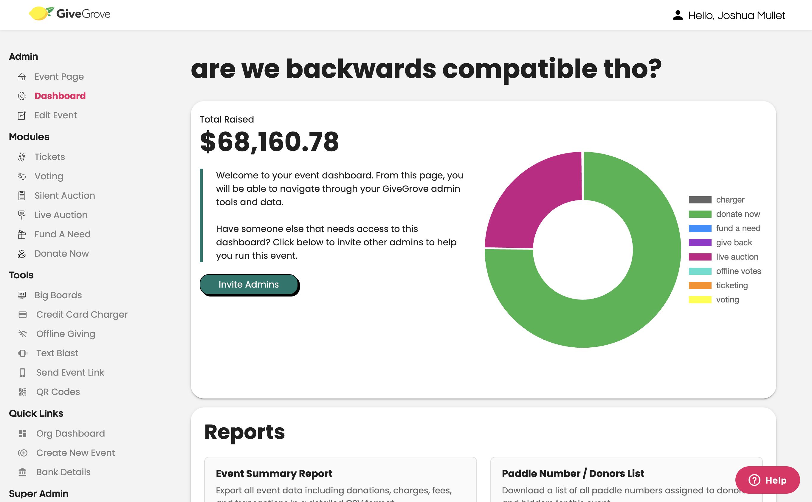
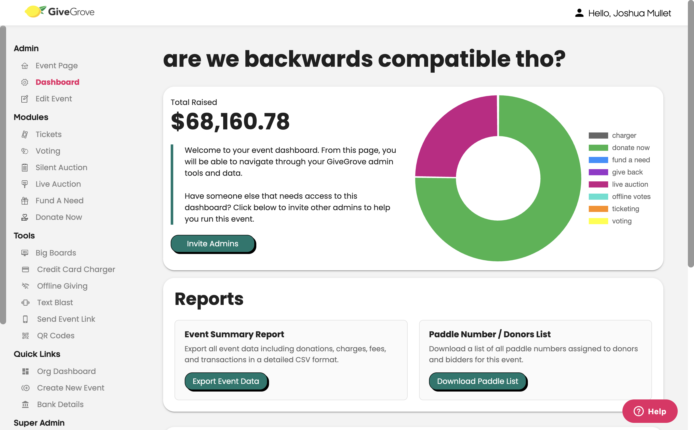
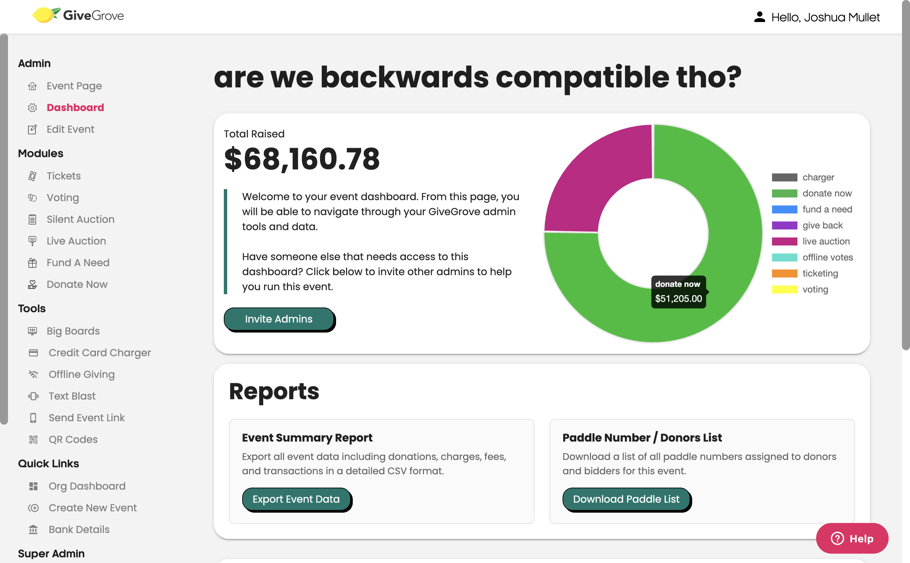

Chart upgrade — before / after (size fixed)
Same event ("are we backwards compatible tho?", $68,160.78 total), real givegrove-mullet data. Donut chart on the event dashboard.
You were right — the new donut was smaller. Now it's fixed.
I measured both charts and the new one had shrunk to a 300×300 box while the live one fills 476×330. The new chart library handles auto-sizing differently, so it was no longer stretching to fill the card. I told it to fill the card again and pinned the height — now it measures
476×330, identical to the live version.
- Tooltip confirmed working: I hovered a slice and it shows the dollar amount correctly formatted — "$51,205.00" with the comma and cents. That was the one unknown from last round; it's now verified (see the third image).
- Bonus still stands: this upgrade fully removes the old date library we cleaned up last round.
Current — what's live right now

New version — after the size fix

Tooltip check — hovering the "donate now" slice
